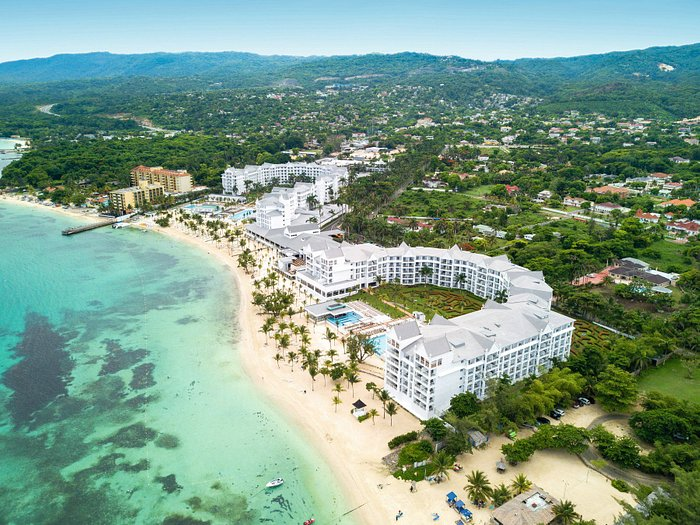

Travel
Yellowstone

File with gif image: yellowstone-river.gif
File with non-gif image: Yellowstone.jpg
Geographical Location: Northwest United States
Established in 1872, Yellowstone National Park stands as a testament to the untamed beauty of the American wilderness. Nestled primarily in the U.S. state of Wyoming, this iconic park extends into Montana and Idaho, covering an expansive area of over 2 million acres. Renowned for its geothermal wonders, Yellowstone is home to the famous Old Faithful geyser, erupting with remarkable regularity. The park boasts a diverse ecosystem, ranging from lush forests to high alpine meadows, and is a sanctuary for a myriad of wildlife, including bison, elk, wolves, and grizzly bears. Visitors are captivated by the mesmerizing landscapes, pristine lakes, and the vibrant geothermal features that make Yellowstone a haven for nature enthusiasts and a UNESCO World Heritage Site.
One of the distinguishing features of Yellowstone is its captivating geothermal landscape. The park sits atop a supervolcano, evidenced by the array of geysers, hot springs, and bubbling mud pots scattered throughout. Beyond the iconic Old Faithful, visitors can explore the vibrant Grand Prismatic Spring, displaying a stunning spectrum of colors. The Norris Geyser Basin, Yellowstone's hottest and most dynamic thermal area, showcases the raw power beneath the Earth's surface. Amidst the geothermal wonders, the Yellowstone Caldera, one of the largest active volcanic systems, shapes the terrain and fuels the park's unique geology. As visitors wander the boardwalks and trails, they witness the awe-inspiring forces of nature that have shaped Yellowstone into a geothermal wonderland.
Photo Gallery
File Name 1: Yellowstone.jpeg
Caption 1: A breathtaking view of the natural wonders in Yellowstone National Park.
File Name 2: yellowstone_animals.jpeg
Caption 2: Wildlife thriving in the diverse ecosystem of Yellowstone.
File Name 3: Yellowstone_geyser.jpeg
Caption 3: Witnessing the powerful eruption of a Yellowstone geyser.
File Name 4: yellowstone_mountain.jpeg
Caption 4: Majestic mountain vistas that define the landscape of Yellowstone.
File Name 5: yellowstone_plants.jpeg
Caption 5: Vibrant plant life contributing to the park's rich biodiversity.
Ocho Rios, Jamaica
File with video: Jamaica_beaches.mp4
File with non-gif image: Ocho_rios_beach.jpg
Geographical Location: Saint Ann, Jamaica
Ocho Rios, situated on the northern coast of Jamaica, is a tropical paradise that beckons travelers with its captivating beauty and vibrant culture. Translated as "Eight Rivers" in Spanish, Ocho Rios is renowned for its lush landscapes, pristine beaches, and crystal-clear waters. The town serves as a gateway to some of Jamaica's most iconic attractions, including Dunn's River Falls, a stunning cascading waterfall that invites adventurous visitors to climb its terraced rocks. Beyond the natural wonders, Ocho Rios offers a lively atmosphere with bustling markets, lively reggae music, and an array of delicious Jamaican cuisine. Whether exploring the rich history at Columbus Park or enjoying water sports along the coastline, Ocho Rios promises an unforgettable Caribbean getaway.
Geologically, Ocho Rios is part of the larger island of Jamaica, known for its diverse topography shaped by volcanic activity and tectonic forces. The region's verdant hills and valleys are a testament to the volcanic origins, providing a picturesque backdrop to the coastal beauty. Ocho Rios is also recognized for its vibrant coral reefs, attracting snorkelers and scuba divers to explore the underwater wonders of the Caribbean Sea. The warm tropical climate and the welcoming spirit of the locals add to the overall charm, making Ocho Rios a destination that seamlessly blends natural wonders, cultural richness, and the laid-back Jamaican vibe.
Photo Gallery
File Name 1: Ocho_Rios_Waterfall.jpeg
Caption 1: Majestic waterfall in Ocho Rios, Jamaica, surrounded by lush tropical greenery.
File Name 2: Ocho_RIos_waterpark.jpeg
Caption 2: Fun-filled waterpark in Ocho Rios, offering thrilling attractions and a refreshing escape.
File Name 3: river_in_ocho_rios.jpeg
Caption 3: Tranquil river flowing through the scenic landscapes of Ocho Rios, inviting relaxation and exploration.
File Name 4: snorkeling_in_ocho_rios.jpeg
Caption 4: Adventurous snorkeling experience in the vibrant waters of Ocho Rios, revealing an underwater paradise.
File Name 5: Scuba-Diving-Jamaica-Coral-Reef-1.jpg
Caption 5: Exciting scuba diving adventure exploring the colorful coral reefs of Ocho Rios, Jamaica.
New York City


Geographical Location: New York, U.S.A
New York City, often referred to as "The Big Apple," is a bustling metropolis that never sleeps. With its iconic skyline featuring the Empire State Building, Times Square, and Central Park, NYC is a global hub for culture, finance, and entertainment. The city is a melting pot of diverse neighborhoods, each offering its own unique charm and character. From Broadway shows to world-class museums, New York City has something for everyone.
In addition to its architectural marvels and vibrant street life, New York City is situated along the Hudson River, providing stunning waterfront views. Central Park, an oasis in the heart of the city, offers a peaceful retreat for both locals and visitors. Whether exploring the historic neighborhoods of Brooklyn, enjoying a Broadway performance, or skating at Rockefeller Center during the winter, New York City is a dynamic destination that captivates millions of people from around the world.
Photo Gallery
File Name 1: New_York_City_Brooklyn_Bridge.jpeg

Caption 1: The iconic Brooklyn Bridge connecting Manhattan and Brooklyn, offering breathtaking views of the city skyline.
File Name 2: new-york-aquarium-coney-island-brooklyn-nyc-hudson-canyons-edge-.jpeg
Caption 2: Exploring marine life at the New York Aquarium in the vibrant neighborhood of Coney Island, Brooklyn.
File Name 3: New_York_City_IceSkating.jpeg
Caption 3: Enjoying the winter charm of Central Park with ice skating surrounded by the city's skyscrapers.
File Name 4: New_York_City_MSG.jpeg
Caption 4: The iconic Madison Square Garden, hosting events and entertainment in the heart of Midtown Manhattan.
File Name 5: New_York_City_Central_Park.webp

Caption 5: Serene moments in Central Park, offering a peaceful escape in the midst of the urban landscape.